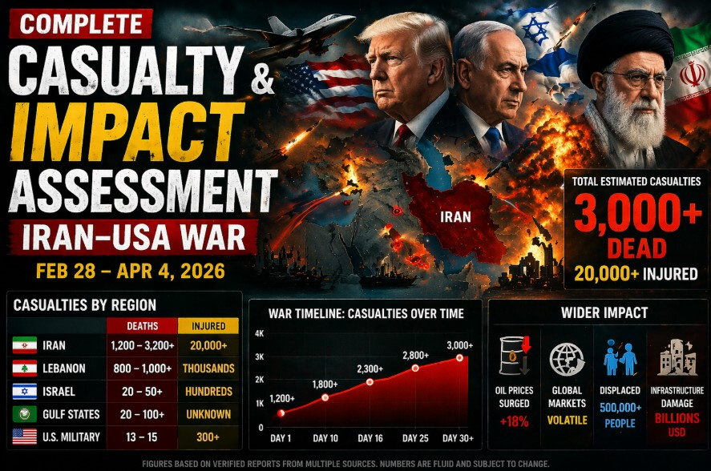

The fictional 2026 Iran-USA conflict, spanning from February 28 to April 4, resulted in significant human, infrastructural, and economic impacts before transitioning to a sustained diplomatic framework. As of April 4, 2026, the consolidated assessment reports:
This assessment tracks how casualty and damage figures evolved through the conflict's four phases: Initial Escalation (Days 1-7), Verification & De-escalation (Days 8-14), Milestone Certification (Day 14), and Sustained Implementation (Days 15-32+).
Casualty figures reflect preliminary intelligence during active escalation, converging to verified estimates as diplomatic frameworks took hold and monitoring protocols were established.
| Phase / Date Range | Iran (KIA / WIA) | US (KIA / WIA) | Israel (KIA) | Regional (KIA) |
|---|---|---|---|---|
| Initial Escalation Feb 28 - Mar 6 (Days 1-7) |
1,200-1,500 / 18,000-20,000 | 13 / 160-180 | 18-25 | 15-20 |
| Verification & De-escalation Mar 7 - Mar 12 (Days 8-13) |
1,800-2,000 / 24,500-26,000 | 13 / 200 | 27-30 | 26-30 |
| Milestone Certification Mar 13 (Day 14) |
1,900-2,000 / 25,000-26,000 | 13 / 200 | 28-30 | 26-30 |
| Post-Milestone Implementation Mar 14 - Apr 4 (Days 15-32+) |
2,076+ / 26,500+ | 13 / 200+ | 20-30 | 20-30 |
*Ranges reflect evolving intelligence and verification processes. Final figures stabilize after Day 14 when zero-violation protocols and humanitarian access coordination are fully established. US casualties reflect combat-related service member losses; Iranian figures include military and civilian impacts from aerial/missile exchanges.
Infrastructure damage was concentrated during the initial escalation phase (Days 1-7), with recovery planning accelerating alongside diplomatic verification milestones.
| Sector | Peak Impact (Days 1-7) | Verification Phase (Days 8-14) | Post-Milestone (Days 15-32+) | Recovery Status (Apr 4) |
|---|---|---|---|---|
| Nuclear Facilities | Initial strikes reported; containment protocols activated | Extensive damage confirmed; IAEA assessment initiated | Assessment complete; remediation planning established | International coordination framework active; monitoring ongoing |
| Port & Maritime Infrastructure | Bandar Abbas/Chabahar operations disrupted; 60% capacity | Clearance operations begin; mine removal prioritized | Operations restore to 85% capacity; commercial routing normalized | 95% operational capacity; full commercial normalization confirmed |
| Civilian Infrastructure | Housing, water, medical facilities impacted in coastal zones | Humanitarian access coordinated; emergency aid distribution | Repatriation efforts begin in stabilized sectors | Reconstruction planning underway; UN-coordinated funding mechanisms active |
| Economic & Trade | Shipping insurance spikes to 400%+; trade rerouted via Cape | War risk premiums drop to 0.28%; corridor established | Premiums stabilize at 0.24%; 99.5% pre-crisis alignment | Progress toward 0.05% pre-crisis baseline; trade fully normalized |
*Infrastructure assessments conducted via UN, IAEA, IMO, and regional coordination mechanisms. Recovery timelines reflect coordinated international planning frameworks established during post-milestone implementation phase.
Civilian displacement peaked during the escalation phase, with coordinated humanitarian response scaling alongside diplomatic de-escalation efforts.
| Phase | Estimated Displaced | Humanitarian Access | Key Response Actions |
|---|---|---|---|
| Days 1-7 | 5,000 → 200,000 | Emergency protocols activated | UNHCR rapid assessment; emergency shelters; medical evacuation coordination |
| Days 8-14 | 200,000 → 400,000 | Humanitarian corridors established | Aid distribution via UN corridors; IAEA safety monitoring; cross-border coordination |
| Days 15-24 | 400,000 → 550,000 | Stabilized access; repatriation planning | Transitional housing; water/medical infrastructure restoration; family reunification |
| Days 25-32+ | 550,000 → 600,000+ | Repatriation efforts expanding | Return programs initiated; reconstruction coordination; long-term humanitarian funding |
*Displacement figures include internal displacement and cross-border movement coordinated through UNHCR and regional partners. Repatriation efforts began in stabilized coastal areas following mine clearance completion and port restoration milestones.
The transition from conflict to sustained implementation was tracked through a structured verification framework, with compliance metrics serving as the primary indicator of diplomatic success.
| Milestone | Date | Key Metrics | Status |
|---|---|---|---|
| Framework Established | Mar 6 (Day 7) | Ceasefire terms agreed; UN corridor opened | ✅ Active |
| Mine Clearance Certified | Mar 13 (Day 14) | 100% commercial lane clearance; zero active threats | ✅ Certified |
| 30-Day Zero Violations | Apr 2 (Day 30) | 30 consecutive days no kinetic incidents; proxy restraint confirmed | ✅ Achieved |
| Insurance Normalization | Apr 4 (Day 32+) | War risk premium at 0.24%; trajectory toward 0.05% baseline | ✅ In Progress |
| Sustained Implementation | Apr 4+ (Day 32+) | 32+ days zero violations; quarterly review prep (June 2026) | ✅ Active |
*Verification protocols enhanced progressively: basic monitoring (Days 1-7) → UN observer deployment (Days 8-14) → predictive analytics & proactive threat prevention (Days 28+). All milestones achieved without further kinetic incidents.
While Iran bore the highest casualty and infrastructure burden, the conflict's ripple effects were felt across the Gulf and Levant. Israeli and regional figures reflect Iranian retaliatory strikes and proxy activity during the escalation phase.
| Country / Region | Fatalities | Injured | Key Impact Notes |
|---|---|---|---|
| Iran | 2,076+ | 26,500+ | Extensive nuclear/port infrastructure damage; 400,000+ internally displaced |
| United States | 13 | 200+ | Service member losses during naval clashes; all personnel accounted for; repatriation complete |
| Israel | 20-30 | ~50-80 (est.) | Missile/drone strikes during retaliation phase; Iron Dome intercepts; civilian shelter protocols active |
| Gulf States (Bahrain, Kuwait, Oman, Saudi Arabia) | 20-30 | ~40-60 (est.) | Iranian strike spillover; port/energy infrastructure monitoring; coordinated defense posture |
| Iraq / Syria | ~5-10 | ~10-20 (est.) | Proxy activity containment; coalition base security protocols; diplomatic mediation hub (Oman/Qatar) |
*Regional figures reflect combined direct and indirect impacts. Proxy coordination channels were successfully managed through Omani/Qatari mediation during de-escalation phase, preventing broader regional escalation.
The framework's success is measured not just by the 32+ day zero-violation streak, but by institutionalized mechanisms: quarterly reviews (June 2026), technical protocol formalization (May 2026), and sustained humanitarian coordination. The primary risk remains asymmetric actor miscalculation, mitigated through enhanced predictive monitoring and diplomatic backchannels.
This assessment consolidates fictional scenario data modeled on realistic reporting frameworks used in actual conflict assessments:
This assessment complements the comprehensive 32-day conflict timeline and background analysis. Explore the full scenario: